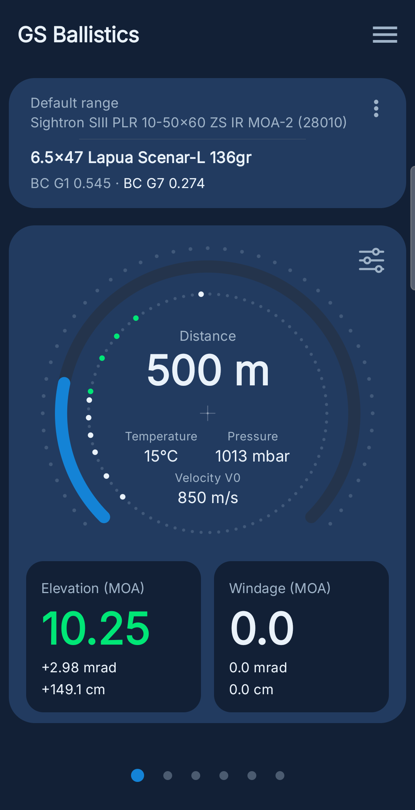
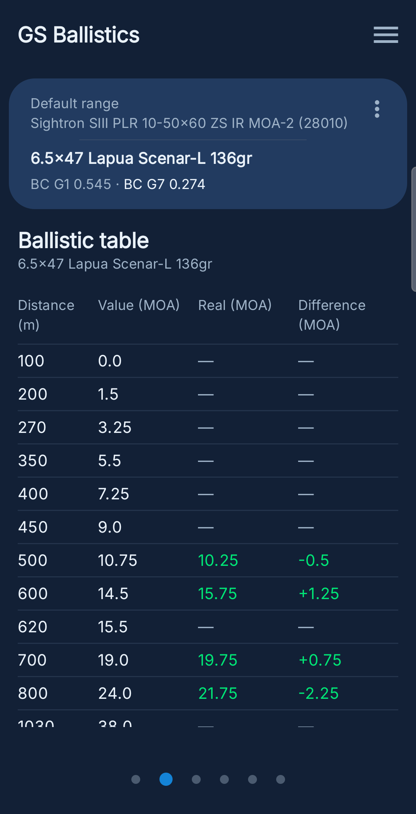
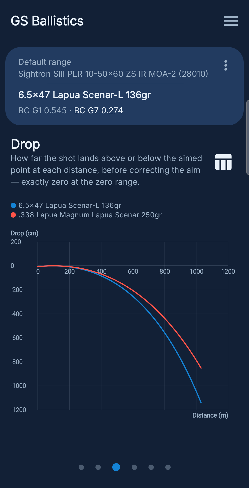
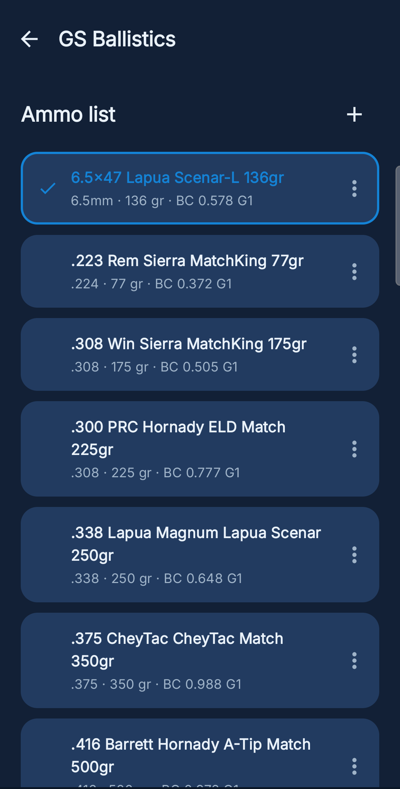
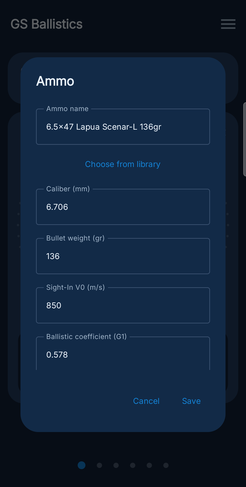
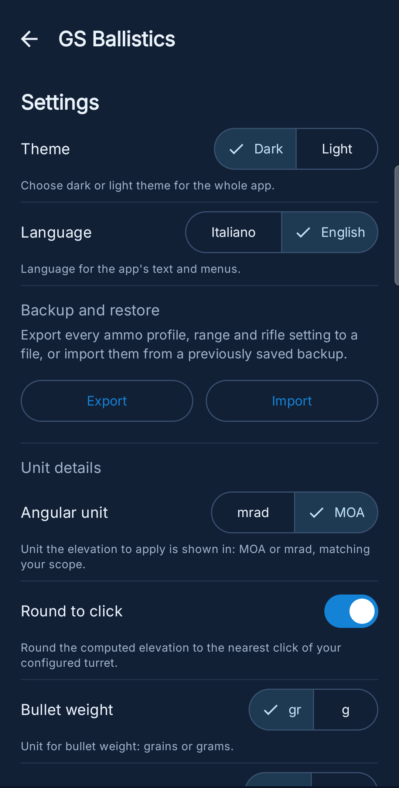

GS Ballistics

Home — alzo calcolato in tempo reale con correzione verificata

Tabella balistica per ogni distanza del poligono

Grafico alzo calcolato vs. verificato sul campo

Libreria munizioni con dati di fabbrica

Modifica di una munizione (6.5×47 Lapua Scenar-L 136gr)

Impostazioni, unità di misura e backup dati
GS Ballistics è un'app Android nativa per il calcolo balistico nel tiro a lunga distanza: dato calibro, peso, coefficiente balistico e velocità iniziale del proiettile, calcola l'alzo (in MOA o mrad) da applicare a qualunque distanza, con tabelle di distanza personalizzabili per poligono e correzioni verificate sul campo.
Il motore balistico è un solutore a massa puntiforme che integra numericamente resistenza dell'aria e gravità, con le tabelle di drag standard G1 e G7 (curva storica Ingalls/McCoy) indicizzate sul numero di Mach — non una semplice formula approssimata. Densità dell'aria e velocità del suono sono derivate in tempo reale da temperatura e pressione inserite dall'utente tramite la legge dei gas ideali, invece di assumere sempre l'atmosfera standard. Il motore è coperto da test di regressione automatici (JUnit) che verificano l'alzo calcolato contro casi reali noti.
L'app include una libreria pubblica di oltre 200 proiettili (dati di fabbrica dei principali produttori), profili munizione e poligono multipli con correzioni verificate per singola combinazione arma/distanza, backup ed esportazione dati, e supporto completo bilingue italiano/inglese.
L'interfaccia si adatta anche a schermi più grandi: su tablet, ruotando in orizzontale, passa automaticamente a un layout affiancato che sfrutta lo spazio extra invece di limitarsi a ingrandire quello pensato per il telefono.
Stack tecnico
Kotlin, Jetpack Compose (Material 3), architettura a vertical slice con moduli separati per il motore balistico puro e l'app Android, principi SOLID, CI/CD via GitHub Actions per build firmate e distribuzione automatica.